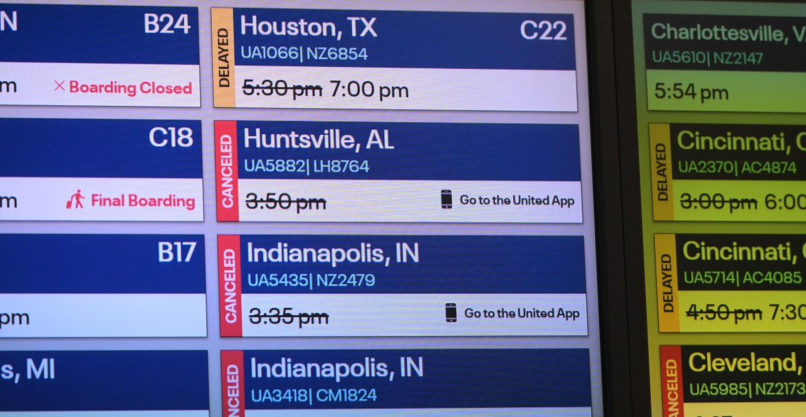

Technology · 15 Nov 2026
Work to replace old copper wire led to the FAA’s ground stop

At a press conference today, Transportation Secretary Sean Duffy said that Friday's nationwide ground stop ordered by the FAA was related to work replacing outdated copper wire with a fiber optic line at a "remote FAA facility." The secretary said that this was "routine maintenance," rather than the
Multiple independent publishers are reporting on the same development: Work to replace old copper wire led to the FAA’s ground stop.
The available reports place the development in the Technology category. The accounts were compared for agreement on the central event rather than simply shared names or broad topics.
One of the available reports describes the development this way: At a press conference today, Transportation Secretary Sean Duffy said that Friday's nationwide ground stop ordered by the FAA was related to work replacing outdated copper wire with a fiber optic line at a "remote FAA facility." The secretary said that this was "routine maintenance," rather than the result of a major modernization effort. He […]
Readers should consult the linked source reports for additional context, updates and details that may change as the story develops.
Sources
This article was produced by the C. O. Eric AI Newsroom from the cited sources. It is published only after automated evidence and safety checks.